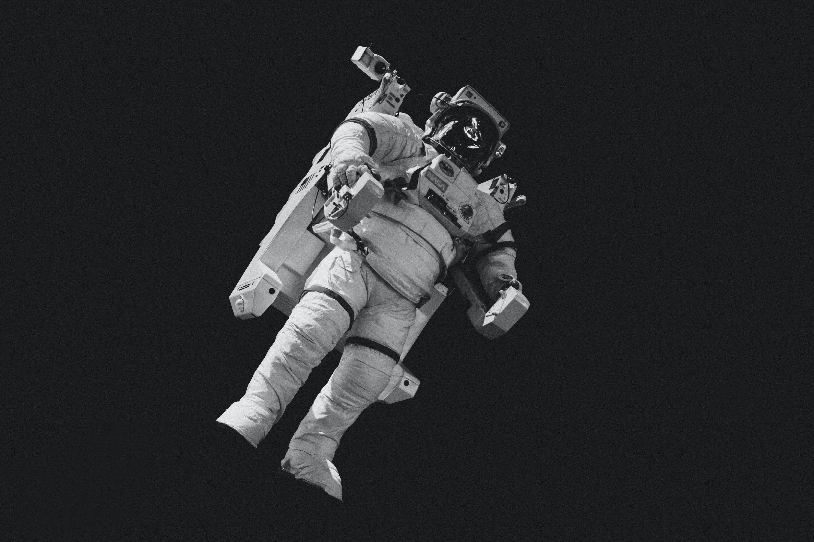
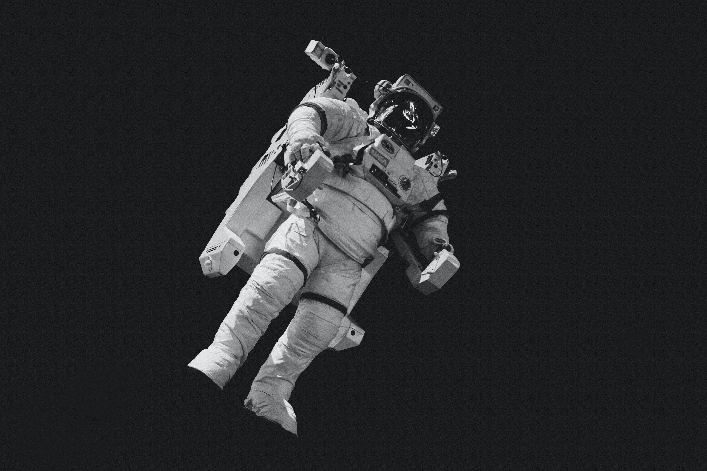

소설가 김초엽
1993년생. 포스텍 화학과를 졸업하고 동 대학원에서 생화학 석사 학위를 받았다. 2017년 <관내분실>과 <우리가 빛의 속도로 갈 수 없다면>으로 제2회 한국과학문학상 중단편 대상과 가작을 수상하며 작품 활동을 시작했다.
김초엽의 소설은 기술로 인한 세계의 변화, 그 안에서의 타자와 소수자 문제, 나아가 개인의 변화하는 감각을 아우르는 소설이다. 김초엽의 소설은 기술로 인한 세계의 변화, 그 안에서의 타자와 소수자 문제, 나아가 개인의 변화하는 감각을 아우르는 소설이다.
변화하는 미래의 ‘소외와 결핍’
인간배아 디자인1 , 외계 지성 생명체2 , 사고언어를 분석하는 ‘이미징 기술’3 , 우주 행성 간 이동이 가능한 워프 항법4 , 웜홀 통로4  , 감정의 조형화5 , 죽은 이의 생애정보를 데이터화 한 ‘마인드’6
, 감정의 조형화5 , 죽은 이의 생애정보를 데이터화 한 ‘마인드’6  , 신체개조 사이보그7
, 신체개조 사이보그7  . 새로운 기술로 변화한 세계에도 여전히 소외와 결핍은 존재한다.
. 새로운 기술로 변화한 세계에도 여전히 소외와 결핍은 존재한다.
인간배아 디자인으로 개조되었지만 오류로 결함이 생겨버린 ‘마을'의 아이들과 지구라는 디스토피아 속 비개조인1  , 디자이너로서의 경력이 단절되고 산후 우울증을 겪으며 세상과 떨어져 살았던 지민의 엄마6 , 동양인 비혼모 우주비행사 재경7  모두 소수자이다.
, 디자이너로서의 경력이 단절되고 산후 우울증을 겪으며 세상과 떨어져 살았던 지민의 엄마6 , 동양인 비혼모 우주비행사 재경7  모두 소수자이다.
외계 지성 생명체 루이2 는 소통 불가능한 타자, 신생아들의 뇌 속 류드밀라 행성으로부터 온 형체가 없는 외계 생명체3 는 인간에게 이타심, 사랑 같은 것들을 가르치는 존재로 등장한다.
강지희 문학평론가
“세계가 깜박할 만큼 작고 사소한 존재에게 온 우주의 무게를 실어
그 존재 증명을 해내는 것이 소설의 역할이기도 하다는 걸
김초엽은 이번에도 다시 한번 우리에게 알려준다.”
이해의 '순간'
타인을 완전하게 이해하는 것은 불가능하고, 특히 그 이해에서 더 많이 밀려난 사람들이 있지만, 어떤 교차점이나 작은 접촉면 같은 것들은 생겨날 수 있다고 생각해요. 현실에서는 그 점이나 면들이 정말 아주 섬세하게 들여다보아야 깨달을 수 있는 것들인데, 그래도 SF는 그 순간을 좀 더 극적으로 확대해서 보여줄 수 있는 장르가 아닐까 싶습니다.
타인을 이해하고자, 진실에 다가가고자 노력하는 개인이 주인공으로 등장한다. 그 여정의 끝은 늘 이해의 순간이다. 순례자-데이지1 (순례자들이 돌아오지 않는 이유), 루이-희진2 (루이의 색채언어), 보현-정하5  (부정적인 감정을 느끼고자 하는 까닭), 죽은 엄마-지민6 (디자이너로서의 경력단절과 산후우울증으로 세계와 벽을 쌓았던 엄마), 재경-가윤7
(부정적인 감정을 느끼고자 하는 까닭), 죽은 엄마-지민6 (디자이너로서의 경력단절과 산후우울증으로 세계와 벽을 쌓았던 엄마), 재경-가윤7  (우주 저편이 아닌 깊은 바다로 들어간 재경의 선택)
(우주 저편이 아닌 깊은 바다로 들어간 재경의 선택)
순례자⸻데이지1
루이⸻희진1
보현⸻정하1
죽은엄마⸻지민1
재경⸻가윤1
경이감 - 김초엽이 생각하는 SF문학의 주요 판단 기준
경이감은 “우주를 생각할 때, 광대한 우주에서 작은 존재란 걸 깨달았을 때의 경이감, 45억년 지구 역사에서 찰나의 시간에 내가 있구나, 라는 생각."

“인간의 내면을 심도있게 탐구해서 그 복잡성과 다면성을 드러내는
것도 분명 의미가 있지만, 인간을 우주에서 조망함으로써 한낱
우주먼지에 불과한 우리를 외부의 시선으로 바라볼 때만
알 수 있는 것들이 있다고 생각해요.”
한국문학을 보면 인물의 복잡성과 다면성을 잘 드러낸 작품들이 눈에 가장 먼저 들어온다. 현실을 사실적으로 반영하기 때문에 그에 지쳐있는 국내 독자들에게 많은 사랑을 받는다. 김초엽의 소설은 조금 다른, 더 넓은 시각으로 우리를 바라본다. 그렇기 때문에, 어떤 소설은 읽은 후 우울감이나 탈력감이 드는 반면, 김초엽 단편들은 읽은 후 따뜻한 날 맞는 산들바람 같은 시원한 느낌이 든다. 지구 밖 ‘마을'1 , 태양계 밖의 행성2  , 류드밀라 행성3
, 류드밀라 행성3  , 우주정류장4 , 터널 너머의 우주7 . 우주라는 더 넓은 공간을 이야기의 배경으로 삼아 인간 내면의 더 넓은 세계를 다루기 때문이 아닐까.
, 우주정류장4 , 터널 너머의 우주7 . 우주라는 더 넓은 공간을 이야기의 배경으로 삼아 인간 내면의 더 넓은 세계를 다루기 때문이 아닐까.